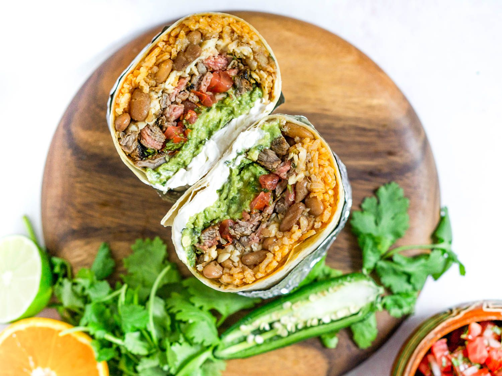

Burritos

Description
A burrito is a dish in Mexican and Tex-Mex cuisine that took form in California cuisine, consisting of a flour tortilla wrapped into a sealed cylindrical shape around various ingredients. The tortilla is sometimes lightly grilled or steamed to soften it, make it more pliable, and allow it to adhere to itself. Burritos are often eaten by hand, as their tight wrapping keeps the ingredients together.
Burritos are filled with savory ingredients, most often a meat such as beef, chicken, or pork, and often include other ingredients, such as rice, cooked beans (either whole or refried), vegetables, such as lettuce and tomatoes, cheese, and condiments such as salsa, pico de gallo, guacamole, or crema.
Ingredients
- 1 onion
- 4 garlic cloves
- 1 tbsp ground cumin
- 1 tbsp ground coriander
- 1 tsp dried oregano
- 500g minced beef
- 400g can chopped tomatoes
- 400g can black beans
- 8 flour tortillas
- 500g of cooked rice
- sliced avo or guacamole
Steps
- Heat the oil in a large pan – a casserole is ideal. Fry the onions for 8 mins, then add the garlic, spices and oregano and cook for 1 min. Crumble over the mince and sizzle for 5 mins, stirring, until browned. Stir in the sugar and leave for a minute, then splash in the vinegar and pour in the tomatoes.
- Simmer for 5 mins then tip in the beans and the water from the can. Season, stir and simmer everything for 20 mins until the beef is in a thick gravy. The sauce can be prepared up to 2 days ahead, chilled and reheated with a splash of water or frozen for 6 months.
- To make the burritos, heat the tortillas following pack instructions. Pile some rice and beef sauce along each tortilla and scatter over your choice of topping. Fold over the ends and roll up to seal. Secure by wrapping with foil if you want. Eat immediately.